In August 2023 my wife Mara and I traveled to Pakse in Southern Laos to help setup an Early Warning System pilot for one our customers People In Need. The Early Warning System is targeting three provinces of Southern Laos: Salavan, Champasak and Attapeu.
This blog post covers the journey to Laos and the setup of the Early Warning System through Somleng. If your only interested in the tech part, feel free to skip to Day 4.
My wife and I live on a small farm just south of Phnom Penh in Cambodia. There are flights from Phnom Penh to Vientiane (Capital of Laos), but Pakse is still around 670 km from Vientiane and the only way to get there is by bus. On the other hand Pakse is only around 600 km from Phnom Penh. There's a bus from Phnom Penh to Pakse but it takes between 13 and 15 hours which didn't sound fun. So we decided to put our stuff in a big black plastic bag, tie it to the back of my 1993 Honda Degree and hit the road.

We left home around 7:00am and headed north, crossing Kandal, Prey Veng, Kampong Cham and Kratie provinces and finally reaching Stung Treng around 3:00pm.


The Cambodian-Laos border is around 70 km from Stung Treng city but the road is unpaved from the Sekong bridge just outside of Stung Treng city all the way to the border. At the border on the Cambodian side there is nothing much except for a few shops where you can change Cambodian Riel (or presumably US Dollars) into Lao Kip. We actually did this at a money changer in Stung Treng before we left. Note that you will need some Lao Kip before entering Laos. There are no ATMs or money changers on the Laos side of the border, and nobody in Laos will accept Cambodian Riel or any other currency for that matter.
If your crossing with a motorbike you'll have to go though both immigration and customs on the Cambodian side. The immigration official asked us for 10,000 Riel ($2.50) per passport after stamping us out. I'm sure this is a non-official payment since I've never been asked to pay when leaving Cambodia in the past. However I've lived in South East Asia for 15 years, (Cambodia for 11 of those) and I understand that immigration officials don't get paid enough to raise their families on the official salary, so I don't really have a problem helping them out.
After you stamp out of Cambodia, you'll have to go to the customs office, where the official will check the paperwork for your motorbike. The important document that you need is the ownership paper for the Motorbike. In Cambodia this is known as the vehicle identification card or (កាតគ្រី). Note that it doesn't matter if this document has the previous owner's name, but you must posses the actual card.


If you don't have the paperwork for the motorcycle, the customs official may still be able to process the export documents, but you may have to pay between $10 and $20. Again, I think this is reasonable, especially if you don't have the required documents. If you stand there and argue, they are within their rights not to let you cross with the motorbike.
Fortunately for us, when we entered customs office, the customs official instantly recognized my wife and I. He went to high school with my wife and her brother and I had met him once before in Phnom Penh. Needless to say, he helped fill out the export documents for us, and we were soon on our way to the Laos side.

There's a tiny office on the Laos side of the border before you get to the main immigration section. Apparently this is so called vehicle immigration where the Laos official will stamp your export paper from the Cambodian side. We had to pay 10,000 Riel (or $2.50) for this stamp. However this is not the document that are required to enter Laos with your motorbike. This is basically just a stamp for the customs official in Laos to see that the export paper from Cambodia has been stamped on the Laos side.
Once we got to immigration on the Laos side, the immigration official, told us that we could not enter Laos with our motorbike and if we still wanted to purchase a Laos visa. At this point we were confused because we assumed that the stamp from the so called "vehicle immigration" was enough. At this point the immigration officer asked us to go to speak to customs for further clarification.
The Lao customs official could not (or refused) to speak English with us. However, a local Lao guide who was at the border with another tour group, helped translate for us. According to the Lao customs official there's a new rule that only organized motorbike tours are allowed to enter Laos with a motorbike. The tours must have a local Lao guide and official paperwork. The Lao customs official didn't even try to ask us for money to get around the problem, he just flat out refused to let us enter with the motorbike.
We decided to contact Mara's high school friend (the customs official on the Cambodian side) to see if he could help us on the Laos side. He came over to the Laos side and was also surprised about this new rule. He had been issuing paperwork on the Cambodian side but never had this problem before. He spoke with the Lao customs official, but he still didn't allow us to enter. So we prepared to take our motorbike back to the Cambodian side, leave it at the border and take a bus to Pakse.
In the meantime, our Cambodian customs official friend was speaking with boss of the Lao customs official, and finally he came to us and said they would make an exception this time. If it wasn't for our friend on the Cambodian side there was no chance of us getting the motorbike into Laos, even with the correct paperwork.
The Lao customs official charged us 50,000 Riel ($12.50) for the motorbike papers to enter Laos (I'm pretty sure this is more than the official amount) but we were happy to pay anyway. A Laos Tourist Visa also costs $40.
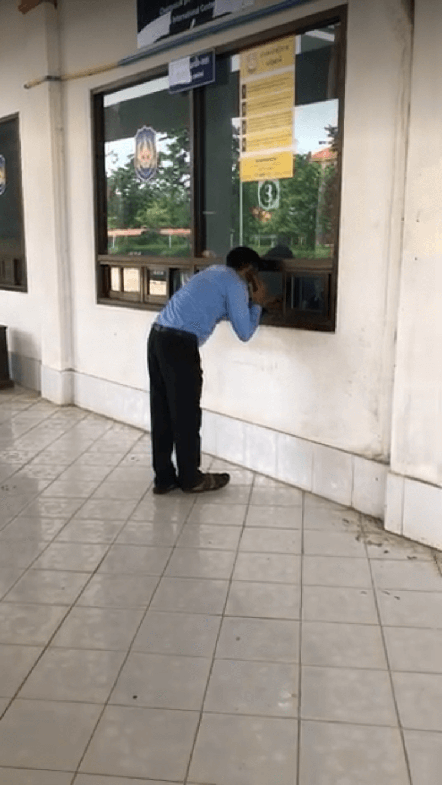
There is literally nothing on the Laos side of the border. No shops. No ATMs. No money changers. Just a road (with not much traffic). That's why if you are traveling by motorbike it is important to have some Lao Kip before you cross in case you need to stop to buy water or petrol or something.
After entering Laos, we put asked Google maps to give us directions to Don Det (part of the 4,000 islands) where we planned on staying the night. I don't really trust Google Maps in Cambodia and have been burnt a few times, so I double checked to see if the route seemed reasonable. I could see a bridge over the Mekong to Don Khong, a ferry to Don Som, and finally another ferry to Don Det. This sounded reasonable (and fun!) so we headed for our first stop Don Khong.
After crossing the bridge onto Don Khong, there's a short road to the ferry crossing. It costs 20,000 Lao Kip (approx $1) to cross over to Don Som.
The Don Som Road is difficult but beautiful. Basically it's just a narrow path through the rice fields. Along the way I had some issues with my chain coming off, but we eventually found a small shop selling drinks and doubling as a mechanic who helped fix it.
Don Det and Don Khon are connected by a bridge. Both islands are way more touristy than Don Som and all the roads are paved. We visited the Liphi Somphamit Waterfalls and the Old French Port and enjoyed a few beers before finding a place to stay on Don Khon.
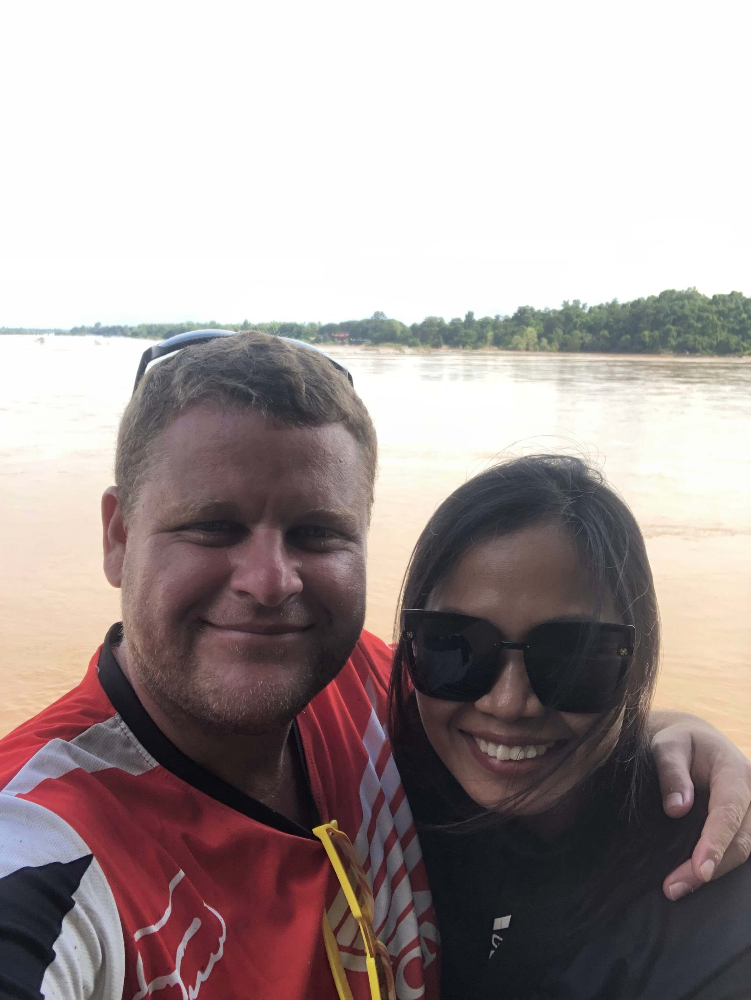 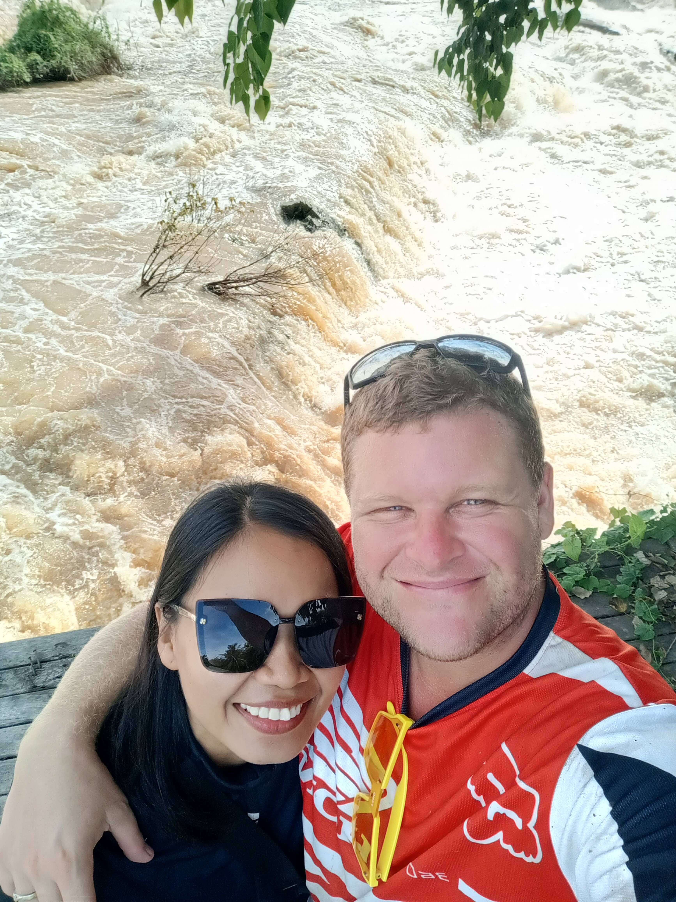 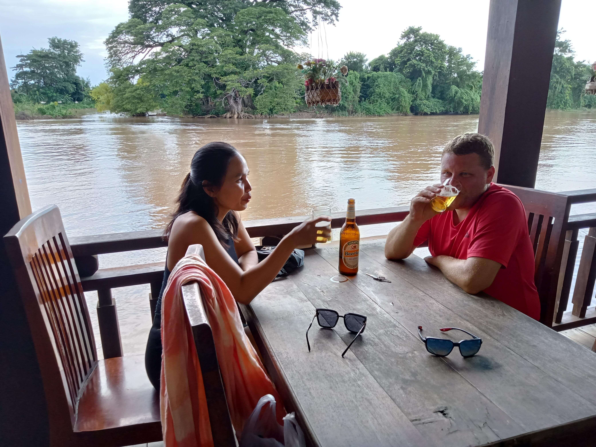


We left Don Det on the ferry to Nakasong which takes around 20 minutes. That's when we realized that actually Google Maps told us to go wrong way on the previous day. From Nakasong you just take the main highway 13 all the way to Pakse. Nakasong is basically the gateway to Don Det and the 4,000 islands.
Along the way we got burnt by Google Maps again while trying to find a waterfall in the Bolaven Plateau. After riding on a dirt track for a few kilometers I had issues with my chain again. We found a rubber plantation and one of the workers helped me fix the chain until we could find a proper mechanic. We decided to give up on the waterfall and head for Pakse.
This is the technical part of the post so feel free to skip it if your not interested!
In order to have a better understanding about how we setup the Early Warning System in Laos, it's useful to understand how it works in Cambodia. Somleng is already powering the National Early Warning System of Cambodia in collaboration with the People In Need. In this system, Somleng is connected to each of the main Mobile Network Operators as shown Figure 1 and Figure 2 below.
Beneficiaries register to the Early Warning System by calling to 1294 and following the IVR prompts.
In case of an emergency such as a flood or other natural disaster, beneficiaries are notified via a recorded message delivered to their mobile phone.
In order to power a pilot Early Warning System in Laos without the administrative red tape required to connect to the local mobile network operators, we use Somleng's Client Gateway feature to deliver the service while bypassing the mobile network operators. Figures 3 and 4 below show how it works.
Beneficiaries register to the Early Warning System by calling to advertised local numbers inserted in the VoIP Gateway.

In case of an emergency such as a flood or other natural disaster, beneficiaries are notified via a recorded message delivered to their mobile phone.

As you can see both the registration flow and broadcast flow for the Laos system is almost identical as the Cambodian system. The main point of difference being that we're replacing the mobile network operators with an off-the-shelf VoIP Gateway.
There are of course some limitations of this setup such as:
On the other hand, the benefit of this system, is that it can be built entirely with open source software and off-the-shelf hardware.
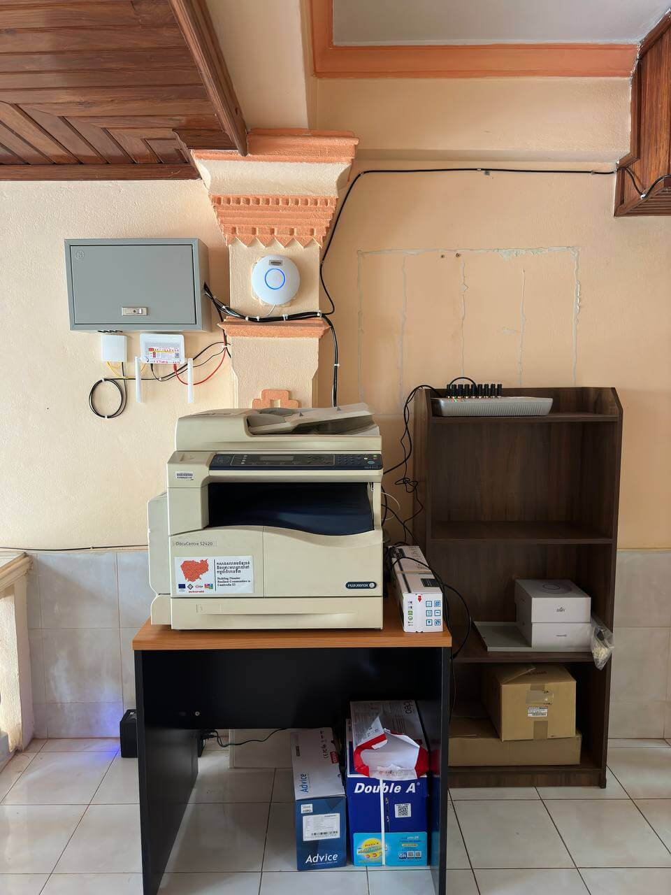 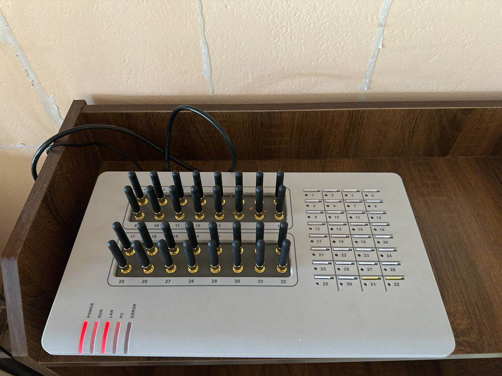The rest of this blog post covers our journey back to Cambodia via the scenic route. ü§£

We left Pakse with the intention of making it back to Stung Treng, however we saw a sign Wat Phou around 30 km south of Pakse, so we decided to turn off and take a look. We arrived at a small village where the ferry terminal is, but we accidentally took the wrong road down to the river bank. There was a young lady with a small wooden boat who gestured that she would take us across the Mekong river to Champasak town. Mara wasn't sure about the safety of the boat as you'll see in the videos below. üòÇ
After making it safely across the river we rode south along the western side of the Mekong to Wat Phou (ວັດພູ). Entrance is only 100,000 Lao Kip (approx $5) per person and it's well worth it as the temple is magnificent.
 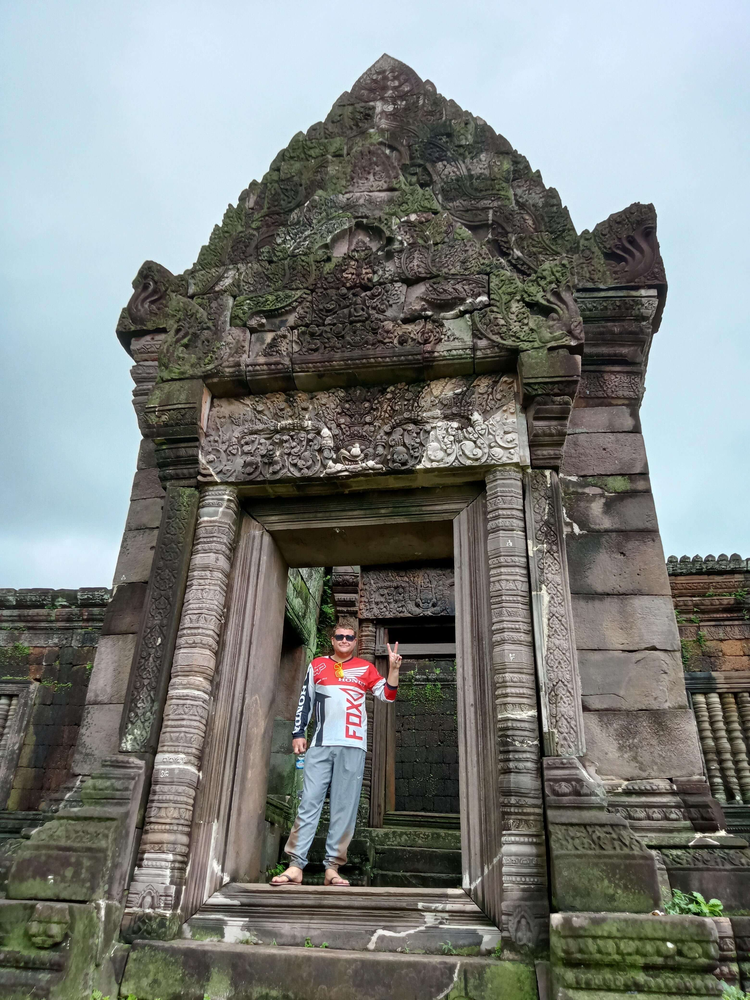
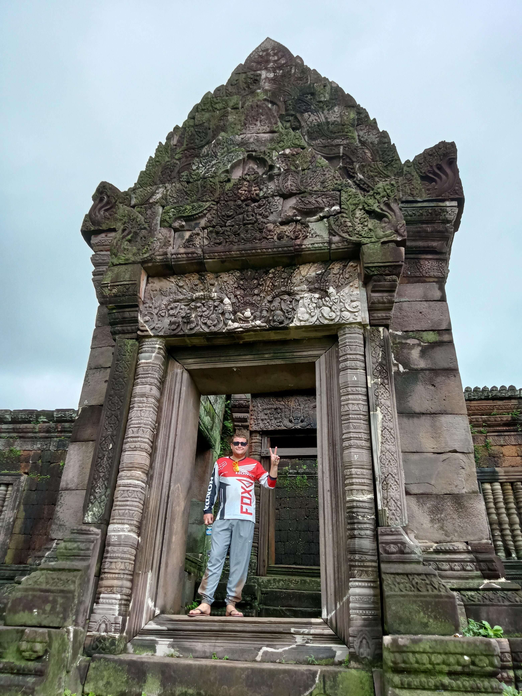
 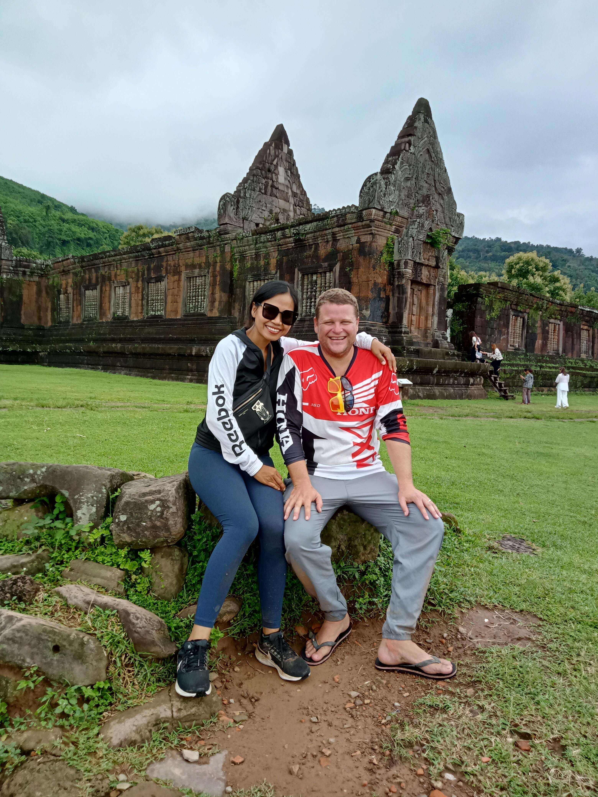
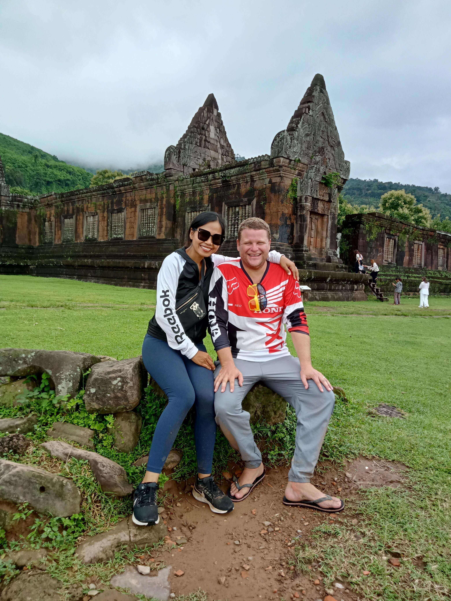
After leaving Wat Phou, we decided to stay on the western side of the Mekong and continue heading south. The plan was to find a ferry back to Don Khong and then cross back over the same bridge that we took on the road to Don Det. The road was pretty rough but the scenery was beautiful.
We eventually found a ferry crossing before we reached Don Khong and crossed back over to the eastern side of the Mekong to the main highway and headed for the border, arriving around 5.00pm.
Shortly after crossing into Cambodia it started to piss down with rain. Fortunately we ran into Mara's high school friend (who helped us with the Motorbike paperwork at the border on the way in). He convinced us not to try to ride to Stung Treng in the rain and dark and suggested that we have a couple of beers with him. So we did and ended up staying the night at his friend's house just near the border.
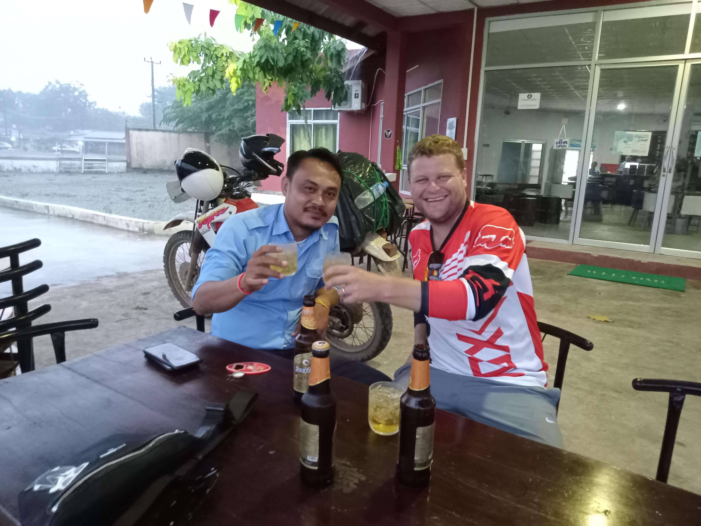
It rained pretty much all day, which made the journey a bit slow. We stopped in Kratie for lunch, before riding along the Mekong to Kampong Cham where we spent the night before heading home the next day.
We arrived home safe and sound. Hopefully we get the chance to visit Laos and it's beautiful people again in the near future!